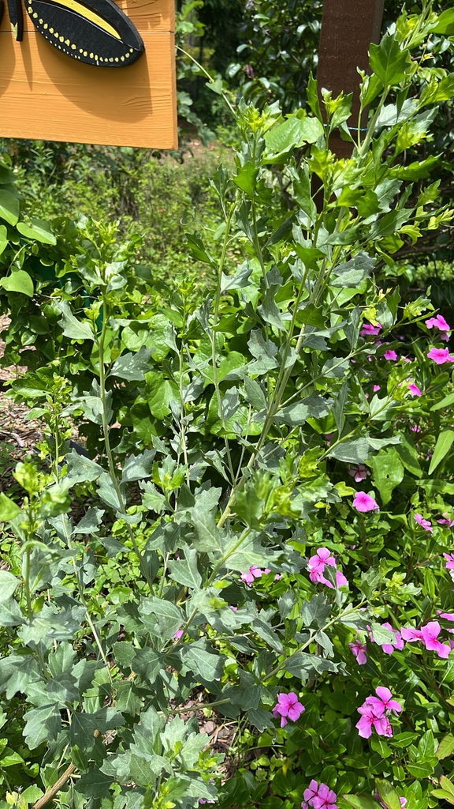

- A Florida native coastal shrub that most visitors have seen along roadsides and waterways without knowing its name. The late-fall fluffy white seed heads — covering female plants in cotton-like masses — are how most people first notice it.
- Dioecious — male and female flowers on separate plants. Only female plants produce the showy white seed masses.
- A critical late-season nectar source: one of the last native plants to flower before winter, often still blooming in November when almost nothing else is. Critical for migrating monarch butterflies and late-season bees.
- Tolerates salt spray, flooding, and brackish conditions that would kill most shrubs.
Native to the Atlantic and Gulf coasts of the eastern United States, from Massachusetts to Texas including all of Florida. Found in coastal marshes, mangrove edges, dunes, and disturbed coastal habitats. Member of Asteraceae — the daisy family.
- The Saltbush at Palma Sola is part of the refurbished butterfly garden, brought back to life in 2026 after years of neglect. The garden was cleared of weeds, replanted with native species, and given a new trellis designed and built by a volunteer named Bill — complete with abstract butterfly artwork of his own design.
- The butterfly garden team maintains it with regular planting, puddle-watering stations, and stone landing spots. The area has been officially designated as a Monarch Waystation in the national registry, complete with a sign — a meaningful recognition of the team's work.
One of the most important late-season nectar sources on the Florida coast. Flowers in October-November when most nectar sources have finished, providing critical fuel for southward-migrating Monarch butterflies and late-season bees.
Female plants produce massive seed masses eaten by warblers, sparrows, and other small birds during fall migration. The timing is not coincidental — seed production aligns with peak fall songbird migration through Florida.
Small, white, in clusters. Male and female flowers on separate plants. Female flowers produce the showy fluffy white seed masses in late fall.
The most recognizable feature: masses of white silky fibers on female plants in October-November, covering the plant like cotton.
Alternate, leathery, waxy green, with irregular toothed margins.
Evergreen to semi-evergreen shrub, 6 to 12 feet, fast growing.
In October-November, female plants covered in white fluffy seed masses are visible from a distance. At other times, the leathery waxy alternate leaves and the coastal setting are the markers.
This isn't an edible plant, but it's harmless — no significant toxicity to people, and not listed as toxic to dogs.
- © Franky McArthur (CC-BY-NC), via iNaturalist